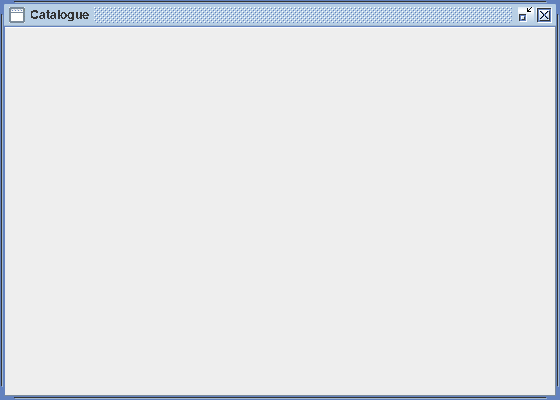
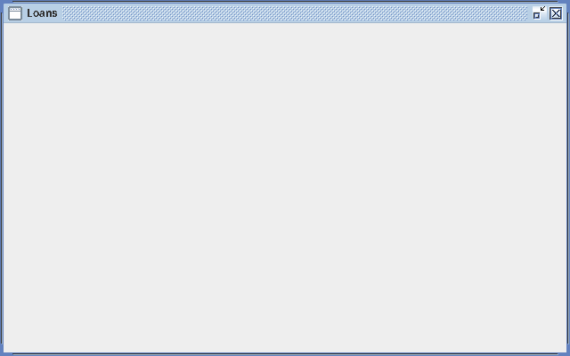
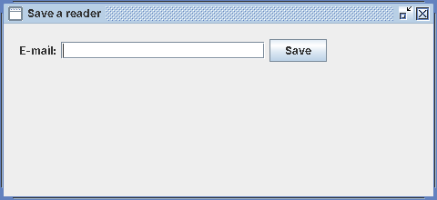

Université d'Alger 1 – Benyoucef Benkhedda
Faculty of Sciences · Computer Science Department
- Module
- Human-Computer Interaction (HCI)
- Level
- L3 – Semester 5 (ISIL, SI)
- Instructor
- Dr. Izountar Yousra
- Academic year
- 2026 / 2027
- Lab
- Lab 3.2 – Interface Components (2): Lists, Tables and Feedback
- Duration
- 75 min
- Tools
- Java 21 (JDK) · VS Code · Swing
- Prerequisite
- Lab 3.1 and Lecture 4 (mock-ups)
Interface Components (2): Lists, Tables and Feedback
Continue the Campus Library app with three more windows: tabs with a list and a tree, a table with a tool bar, and a save with feedback (data check, busy cursor, progress bar).
For each step you have the real interface to build (click its numbers to name each component) and the code, given stage by stage (it cannot be copied: type it yourself). After each stage you run the program and compare your window with the picture. Click any line of code to see what it does.
Objectives
- Organise a window with tabs (
JTabbedPane), a list with a model and a tree for content with levels. - Show data in a table that can be sorted, with a tool bar and tooltips.
- Choose the right kind of message: question, information, warning, error.
- Give feedback during an action: check the data first, then busy cursor, disabled button, progress bar and a final message (
javax.swing.Timer).
Session plan
| Part | Time |
|---|---|
| 1. Exercise 1: Tabs, list and tree | 25 min |
| 2. Exercise 2: Table and tool bar | 25 min |
| 3. Exercise 3: Events and feedback: check, wait, confirm | 25 min |
| Total | 75 min |
Help guide help to work without problems
Read this page before starting and come back to it as soon as something does not work.
1 · Before you start: checklist
- Lab 3.1 done: you can build a window, use layouts and handle a click.
- Reuse the project
TpComponentsof Lab 3.1 (or create it: Ctrl+Shift+P →Java: Create Java Project→ No build tools). - One class (one file) per exercise in
src/, named exactly:LibraryTabs.java,BookTable.java,SaveFeedback.java. - Build each window step by step: after each step, run the program and compare it with the expected UI.
2 · VS Code commands
| What | How |
|---|---|
| Create the project | Ctrl+Shift+P → Java: Create Java Project → No build tools → name TpComponents |
| New class | Right-click src → New File → BookForm.java (same name as the class) |
| Run the file | ▶ Run above main, or F5, or Ctrl+F5 (run without debugging) |
| Open the terminal | Ctrl+` (key under Esc) |
| Add the missing imports | Shift+Alt+O (organise imports) or click the 💡 bulb |
| Format the code | Shift+Alt+F |
| Auto-completion | Ctrl+Space |
| Rename a variable everywhere | F2 |
| Comment a line | Ctrl+/ |
| Save | Ctrl+S (always save before running) |
3 · Terminal commands
| Command | Meaning |
|---|---|
java -version / javac -version | Check that the JDK is installed (version 17 or more). |
cd src | Go into the folder with your .java files. |
javac MainWindow.java | Compile: creates MainWindow.class or shows the errors with their line numbers. |
java MainWindow | Run the compiled class (no .java, no .class at the end). |
java MainWindow.java | Compile and run one file in one command (Java 11+). |
| Ctrl+C in the terminal | Stop a program that does not close. |
4 · Skeleton of every Swing class
import javax.swing.*;
import java.awt.*;
public class BookForm extends JFrame {
public BookForm() {
setTitle("New book");
setSize(520, 420);
setLocationRelativeTo(null); // center
setDefaultCloseOperation(JFrame.EXIT_ON_CLOSE);
// ... create the components, add them, add the listeners
}
public static void main(String[] args) {
SwingUtilities.invokeLater(() -> new BookForm().setVisible(true));
}
}5 · Components of Lecture 4 → Swing class
| Lecture 4 component | Swing class | Useful methods |
|---|---|---|
| Window, title bar | JFrame | setTitle, setSize, setLocationRelativeTo, setDefaultCloseOperation |
| Menu bar, drop-down menu | JMenuBar, JMenu, JMenuItem | setJMenuBar, add, addSeparator |
| Dialog box, messages | JOptionPane | showMessageDialog, showConfirmDialog, showInputDialog |
| Label, non-editable text | JLabel | setText, setFont |
| Single-line text zone | JTextField | getText, setText, requestFocus |
| Multi-line text zone + scrollbar | JTextArea in JScrollPane | setLineWrap, append |
| Push button | JButton | addActionListener, setEnabled, setToolTipText |
| Radio buttons (1 among n) | JRadioButton + ButtonGroup | isSelected |
| Check box | JCheckBox | isSelected |
| Drop-down list | JComboBox<String> | getSelectedItem |
| Increment spinner | JSpinner + SpinnerNumberModel | getValue |
| Slider | JSlider | getValue, setPaintTicks, setPaintLabels |
| List | JList + DefaultListModel | addElement, remove, getSelectedIndex |
| Tree list | JTree + DefaultMutableTreeNode | add |
| Tabs (group) | JTabbedPane | addTab |
| Table / grid | JTable + DefaultTableModel | addRow, removeRow, getSelectedRow |
| Tool bar | JToolBar | add |
| Progress indicator | JProgressBar | setValue, setStringPainted |
| Cursor | Cursor | setCursor(Cursor.getPredefinedCursor(Cursor.WAIT_CURSOR)) |
6 · Layout managers
| Layout | Use it for | Example |
|---|---|---|
BorderLayout (default of JFrame) | 5 zones: NORTH, SOUTH, EAST, WEST, CENTER | add(status, BorderLayout.SOUTH); |
FlowLayout | components in a row, one after the other | new JPanel(new FlowLayout(FlowLayout.LEFT)) |
GridLayout | a grid of equal cells (forms: label | field) | new JPanel(new GridLayout(3, 2, 8, 8)) |
Tip: build small JPanels, each with its own layout, then put the panels in the window.
7 · Events
- A click on a button or a menu item →
addActionListener(e -> { ... }). - The ✕ of the window →
addWindowListener(new WindowAdapter() { public void windowClosing(WindowEvent e) { ... } })withDO_NOTHING_ON_CLOSE. - Events wait in a FIFO queue and are dispatched one by one: a long task in a listener (or
Thread.sleep) freezes the window. Usejavax.swing.Timer. - Read a value inside the listener (at the moment of the click), not when you build the window.
8 · Common errors and how to fix them
| Message / symptom | Fix |
|---|---|
cannot find symbol JFrame | Add import javax.swing.*; (and import java.awt.*; for layouts, Font, Cursor). |
class X is public, should be declared in a file named X.java | Rename the file exactly like the class (capitals count). |
| The window does not appear | You forgot setVisible(true) in main. |
| The window is empty or tiny | Call setSize (or pack()) and add the panel with add(...). |
| Both radio buttons can be ticked | Put them in the same ButtonGroup. |
| No header on the JTable | Put the table in a JScrollPane. |
ArrayIndexOutOfBoundsException: -1 | Nothing is selected: test if (index >= 0) before removing. |
| The window freezes | Remove Thread.sleep; use javax.swing.Timer. |
';' expected / reached end of file | A ;, ) or } is missing on the line shown or just before. |
1. Exercise 1: Tabs, list and tree ⏱ 25 min
1Tabs, list and tree
⏱ 25 min
Tabs, list and tree
⏱ 25 minBuild the Catalogue window with two tabs: a list of books that you can add to and remove from, and a tree of categories.
Guidelines
- A
JTabbedPanewith two tabs: Books and Categories (addTab). - The list uses a model:
DefaultListModel<String>+JList, single selection, inside aJScrollPane. - Add →
model.addElement(text)if the field is not empty. Remove →model.remove(list.getSelectedIndex())if an item is selected. - The tree:
DefaultMutableTreeNodenodes (Library → Computer science → Programming, HCI; Mathematics → Algebra) shown withnew JTree(root). - Import
javax.swing.tree.DefaultMutableTreeNode.
Build this window in 5 stages. In each stage: type the green lines, run, and compare your window with the picture. Then go to the next stage.

LibraryTabs.java Components of Lecture 4 in this window
| # | Lecture 4 name | Swing class | Why |
|---|---|---|---|
| 1 | Tabs (tabbed notebook) | JTabbedPane | Groups (module 5): structured information in pages labelled by tabs. |
| 2 | List (single selection) | JList + DefaultListModel | Ordered content always displayed; scrollbar if there are many items. |
| 3 | Text zone (input) | JTextField | The title of the new book. |
| 4 | Push button: Add | JButton + ActionListener | Adds the typed title to the model of the list. |
| 5 | Push button: Remove | JButton + ActionListener | Removes the selected item (nothing happens if nothing is selected). |
2. Exercise 2: Table and tool bar ⏱ 25 min
2Table and tool bar
⏱ 25 min
Table and tool bar
⏱ 25 minBuild the Loans window: a table of loans that can be sorted, and a tool bar with Add and Delete buttons with tooltips.
Guidelines
DefaultTableModel(columns, 0)with 3 columns (Student, Book, Return date) and 2 first rows (addRow).JTableinside aJScrollPane(otherwise the header is not visible).setAutoCreateRowSorter(true): click a header to sort.- A
JToolBarat NORTH with two buttons and their tooltips. - Add →
JOptionPane.showInputDialogasks the student name, thenaddRow. - Delete → if no row is selected, a warning message; otherwise
removeRow(table.convertRowIndexToModel(row))(needed when the table is sorted).
Build this window in 5 stages. In each stage: type the green lines, run, and compare your window with the picture. Then go to the next stage.

BookTable.java Components of Lecture 4 in this window
| # | Lecture 4 name | Swing class | Why |
|---|---|---|---|
| 1 | Tool bar | JToolBar | Direct access to frequent commands (buttons and icons). |
| 2 | Button with a tooltip | JButton.setToolTipText | Hover it: the tooltip explains the command. |
| 3 | Table header (click to sort) | setAutoCreateRowSorter(true) | Click a header to sort the rows. |
| 4 | Table / grid | JTable + DefaultTableModel | 2-D organisation of data: rows, columns, headers. |
3. Exercise 3: Events and feedback: check, wait, confirm ⏱ 25 min
3Events and feedback: check, wait, confirm
⏱ 25 min
Events and feedback: check, wait, confirm
⏱ 25 minBuild the window Save a reader: check the e-mail, then simulate a 2-second save with a busy cursor, a disabled button, a progress bar and a final message.
Guidelines
- If the e-mail has no
@or no dot: an error message that says how to fix it, then put the focus back in the field (requestFocus()). - Otherwise: disable the button (
setEnabled(false)) and show the busy cursor (Cursor.WAIT_CURSOR). - A
javax.swing.Timerevery 100 ms adds 5 to theJProgressBar; at 100 it stops, restores the cursor and the button, and writes "Saved". - Use
javax.swing.Timer, notThread.sleep: sleep would freeze the interface (no events are processed). - Test: type a wrong e-mail, then a correct one.
Build this window in 4 stages. In each stage: type the green lines, run, and compare your window with the picture. Then go to the next stage.

SaveFeedback.java Components of Lecture 4 in this window
| # | Lecture 4 name | Swing class | Why |
|---|---|---|---|
| 1 | Input task + data check | JTextField + validation | The data is checked before the action (protection against errors). |
| 2 | Triggering task | JButton + ActionListener | The click is an event placed in the event queue, then dispatched to onSave(). |
| 3 | Progress indicator | JProgressBar + javax.swing.Timer | Shows that the system works and how far it is (feedback). |
| 4 | Status message | JLabel.setText | Tells the user what happens: Saving…, then Saved. |
Human-Computer Interaction · Université d'Alger 1 · Your “I'm done” ticks are saved in your browser only.